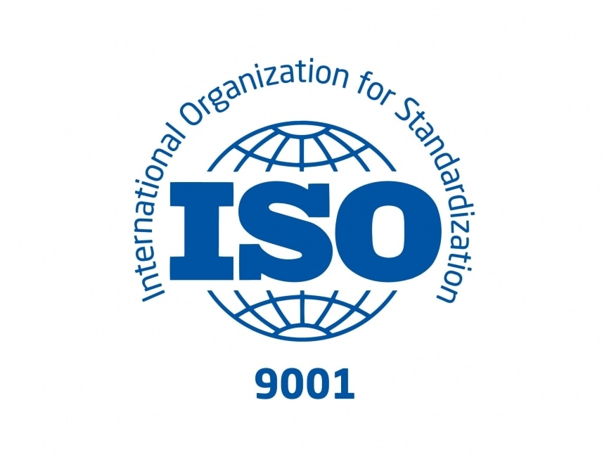

Las tecnologías de la información y comunicación (TIC) son el resultado de poner en interacción la informática y las telecomunicaciones. Todo, con el fin de mejorar el procesamiento, almacenamiento y transmisión de la información. Consiguiendo de esta manera mejorar el nivel de nuestras comunicaciones.
El término TIC también se usa para referirse a la convergencia de redes audiovisuales y telefónicas con redes informáticas a través de un único sistema de cableado u enlace. Existen grandes incentivos económicos para fusionar la red telefónica con el sistema de red informática utilizando un único sistema unificado de cableado, distribución de señales y gestión. TIC es un término general que incluye cualquier dispositivo de comunicación, que abarca radio, televisión, teléfonos celulares, computadoras y hardware de red, sistemas satelitales, etc., así como los diversos servicios y dispositivos con ellos, tales como videoconferencias y aprendizaje a distancia.
El término TIC es más apropiado y ha reemplazado a la expresión "nuevas tecnologías" que se usaba popularmente para referirse a algunas de estas tecnologías. Por ejemplo, a fines del siglo XIX, el teléfono podría considerarse una nueva tecnología según las definiciones actuales. Lo mismo podría aplicarse a la televisión cuando apareció y se hizo popular en la década de 1950. Hoy en día, estas tecnologías se incluirían en la lista de las TIC, pero es probable que las computadoras ya no puedan ser consideradas nuevas tecnologías.
La historia de las TICs en la época moderna empieza en la década de los 70 del siglo XX, al estallar la revolución digital. Sin embargo, la búsqueda de herramientas para comunicarse a distancia es algo que ha ocurrido desde épocas muy remotas y algunos aparatos fundamentales en la actualidad proceden de épocas anteriores, como el teléfono
TIC son las siglas de las Tecnologías de la Información y la Comunicación. Se definen como las tecnologías desarrolladas para facilitar la comunicación y la información entre los seres humanos.

Entre ellas se encuentran las computadoras, la televisión y los celulares, pero también inventos antiguos y en desuso como el telégrafo
A pesar de que se tiende a identificar el concepto TIC como algo relacionado con los últimos avances en materia de comunicación, como las computadoras o los celulares, el ser humano siempre ha buscado herramientas para comunicarse con sus semejantes. Sin entrar en métodos más rudimentarios, como el sonido de tambores o los mensajes enviados con animales, se pueden señalar dos avances fundamentales en esta área.
El primero, el telégrafo, que permitía la comunicación a largas distancias ya en el S. XIX, con antecedentes en el siglo anterior.
El segundo, y que es la base de muchas tecnologías actuales, es el teléfono. Su creación en la segunda mitad del S.XIX y su popularización en las décadas posteriores pusieron la base de una comunicación universal en el planeta.


Durante esa época, Paul Nipkow desarrolla su disco, un dispositivo que permitía almacenar escenas de manera ordenada. Aunque en su momento su funcionalidad no era tan tangible, fue el elemento clave para el desarrollo de la televisión en los años 20.
Con el cine ya en marcha, en 1925 la historia de las telecomunicaciones da otro paso gigante al retransmitirse la primera señal de televisión. En 1927 la BBC comienza su emisión en Reino Unido y en 1930 la NBC y la CBS hacen lo propio en Estados Unidos. Aunque ya en los años 20 se hicieron pruebas para emitir en color,
no fue hasta los años 40 que el sistema se pudo implementar, expandiéndose por el mundo muy poco a poco.

En esos años empiezan a construirse las primeras computadoras. Al principio eran enormes, ocupando habitaciones enteras, pero poco a poco empiezan a reducirse. El desarrollo de los transistores tiene una parte fundamental en este asunto, ya que permitían más potencia

Igualmente aparece entonces la primera versión primitiva de la red, lo que hoy es Internet. Se trata de una creación militar, ya que el mundo se encontraba entonces en plena Guerra Fría.
En la década de los 70 cuando se empieza a hablar de las Tecnologías de la Información y Comunicación. El gran salto tecnológico que se produce en esos años provoca la incorporación definitiva de la informática a las comunicaciones, lo que es el punto de inicio de la actual era digital. Esto continúa avanzando durante los 80, cuando las computadoras personales empiezan a hacerse más asequibles y comienzan a ser usadas por más gente. Igualmente, aparecen modelos de celulares móviles, que van disminuyendo de tamaño y aumentando en prestaciones
Una vez que las herramientas estaban ya preparadas, faltaba el último impulso para que estas tecnologías fueran las que caracterizaran a toda una era. Y este impulso llegó con Internet y la Word Wide Web.
A partir de la década de los 90, su uso se ha extendido tanto que hoy alcanza toda la superficie del planeta. De esta forma, todo el mundo está por vez primera interconectado.
A esto hay que unirle las mejoras técnicas de aparatos ya existentes, como los teléfonos. Hoy, muchas personas llevan una pequeña computadora en el bolsillo, con toda la información al alcance de la mano.
De igual forma, el salto a lo digital ha supuesto un gran avance en cuanto a la velocidad y calidad de transmisión de datos, logrando que sea instantánea. Se puede decir que ha supuesto una revolución solo comparable a la aparición de la imprenta.
Una de las funcionalidades más importantes que se han desarrollado este tiempo han sido los servicios de mensajería instantánea. Desde los años 80 y 90 han aparecido los correos electrónicos, los SMS, Windows Live Messenger, Skype, Hangouts, WhatsApp, Line, Telegram o Zoom, entre otros muchos. Esto ha permitido una comunicación global instantánea nunca antes vista.
El uso de nuevos tipos de señales y el desarrollo de nuevos medios de transmisión, adaptados a las crecientes necesidades de comunicación, han sido fenómenos paralelos al desarrollo de la historia. Otros hitos y hechos importantes que han marcado la evolución de las telecomunicaciones y, por tanto, el devenir de las tecnologías de la información y comunicaciones:
Desde un punto de vista histórico, la revolución de las Tecnologías de la Información marca un momento crucial y decisivo en la sociedad mundial, pues ha penetrado en todas las áreas de vida humana, no como agente externo, sino como (muchas veces) motor que genera un flujo activo en las interrelaciones sociales.
Durante la última década del siglo pasado, mucho se habló sobre una nueva era de oscurantismo informativo, ocasionado por esta suerte de carrera contra reloj por la adquisición y generación de información y conocimientos. Sin embargo, las nuevas tecnologías de la información, representan una oportunidad singular en el proceso de democratización del conocimiento, pues los usuarios pueden tomar el control de la tecnología, que usan y generan, y producir y distribuir bienes y servicios. Podría pensarse que las TI han abierto un territorio en el cual la mente humana es la fuerza productiva directa de mayor importancia en la actualidad.
Para conocer la importancia de las TIC en el funcionamiento de las empresas, primero debemos entender la base de su concepto. Las Tecnologías de la Información y la Comunicación (TIC) son las herramientas tecnológicas que permiten un mejor acceso y clasificación de la información como medio tecnológico para el desarrollo de su actividad. Las Tecnologías de la Información y las Comunicaciones (TIC), es una excelente herramienta de gestión empresarial, que ayuda positivamente para el desarrollo y viabilidad de las organizaciones. Las Tics agregan valor a las actividades operacionales y de gestión empresarial en general y permite a las empresas obtener ventajas competitivas, permanecer en el mercado y centrarse en su negocio.
Las Tics representan una herramienta importante en los negocios, sin embargo, el implementar un sistema de información no garantiza que ésta obtenga resultados de manera automática o a largo plazo. En la implementación de un sistema de información intervienen muchos factores, siendo uno de los principales el factor humano. Es previsible que ante una situación de cambio el personal se muestre renuente a adoptar los nuevos procedimientos o que los desarrolle plenamente y de acuerdo a los lineamientos que se establecieron.
Por esta razón es necesario hacer una planeación estratégica tomando en cuenta las necesidades presentes y futuras de la empresa. Así como una investigación preliminar y estudio de factibilidad del proyecto que deseamos.
1.Red de telefonía fija: Si bien es cierto que los dispositivos móviles han desplazado en su uso cotidiano a las redes tradicionales de telefonía, aún es útil tener un teléfono fijo para comunicarse.
2. Red de telefonía móvil: En la actualidad, los dispositivos móviles dominan el mercado de las telecomunicaciones.
3. Red de banda ancha: Permiten transmitir información de forma casi inmediata.
4. Redes en el hogar: La red más conocida de esta categoría es el wifi, una tecnología que permite la interconexión inalámbrica de dispositivos.
5. Redes de televisión: Hay cuatro subcategorías de tecnología por las cuales se transmite contenido en este medio: televisión satelital, por cable, televisión terrestre y por internet.
Hoy por hoy, hay disponibles varios dispositivos o terminales que conforman las TIC. Entre los más destacados se encuentran:
1. Computadoras: Quizás sea una de las herramientas más importantes en el mundo empresarial, ya que permite a las empresas almacenar y gestionar la base de datos de sus clientes.
2. Teléfonos inteligentes.
3. Smart TV: La televisión inteligente combina aspectos de la televisión tradicional y el internet. Gracias a ello puede ofrecer de una mayor variedad de contenidos.
4. Consolas de juegos.
Rápido acceso a la información. Esto es de gran utilidad para la empresa, pues agiliza el acercamiento a los conocimientos necesarios; además, ayuda a que los clientes lleguen a nuestro negocio más fácilmente.
1. Mayor capacidad de análisis de datos. Herramientas informáticas que nos permiten poder analizar nuestros datos y tener un control más cercano de nuestras transacciones. Por ejemplo, llevar las cuentas de nuestra empresa, estudiar a la competencia, así como conocer las estadísticas de marketing de nuestros potenciales clientes.
2. Facilitar la labor de empleados y potenciar el trabajo en equipo. Muy relacionado con el punto anterior, pues un buen uso de las TIC nos permite ahorrar tiempo y esfuerzo en tareas y organización diaria.
3. Mayor interconexión y expansión de mercados. Con las TIC podemos interactuar de manera casi automática entre cliente y empresa, por lo que se agiliza con gran rapidez los diversos trámites y componentes que forman parte de esta relación. Gracias a Internet podemos dar a conocer nuestros productos más allá de nuestra zona geográfica.
El comportamiento del mercado se ha transformado debido al uso de las tecnologías. La conectividad, inmediatez e innovación son las características más deseables por parte de las organizaciones.
Las TIC permiten a los gerentes y directivos conocer el funcionamiento en tiempo real de sus compañías, además, facilita la toma de decisiones a distancia. Sucede, sobre todo en América Latina, que las empresas integran estas herramientas cuando su sistema de trabajo es rebasado por las propias necesidades de la misma.
Una empresa se traza objetivos que puedan ser medibles, claros y alcanzables. Es importante que los desarrolladores tengan en cuenta esos pilares al momento de crear nuevos sistemas.
La adquisición de un sistema tecnológico por parte de una compañía se va a deber por a las necesidades que el departamento de RRHH y le presente a la junta directiva. La tarea de los desarrolladores será interpretar las necesidades que estén presentando las organizaciones, y proponer soluciones eficaces antes de empezar a crear este tipo de herramientas.
La principal ventaja es que todos los procesos dentro de una empresa se realicen con mayor facilidad, sin embargo, hay otros beneficios también son considerados por las compañías:
• Apertura de mercados a nivel global
• Nuevos modelos de negocios
• Automatización Robótica de procesos o RPA
• Fomento del trabajo colaborativo
• Agilidad en la toma de decisiones
• Mejora en la comunicación interna y externa
• Información del mercado por el uso de la Big Data
• Nuevas estrategias de marketing
Es importante acotar que el simple hecho de involucrar las tecnologías a los procesos empresariales no garantiza que estos beneficios se presenten inmediatamente.
Las Tics son esenciales para mejorar la productividad de las empresas, la calidad, el control y facilitar la comunicación, entre otros beneficios, aunque su aplicación debe llevarse a cabo de forma inteligente.
El mero hecho de introducir tecnología en los procesos empresariales no es garantía de gozar de estas ventajas. Para que la implantación de nueva tecnología produzca efectos positivos hay que cumplir varios requisitos: tener un conocimiento profundo de los procesos de la empresa, planificar detalladamente las necesidades de tecnología de la información e incorporar los sistemas tecnológicos paulatinamente, empezando por los más básicos.
Otro aspecto importante a considerar es que las empresas que tienen una gran capacidad de beneficiarse de la tecnología son organizaciones que, antes de añadir un componente tecnológico, describen detalladamente cuál será la repercusión para su empresa.
Las Tecnologías de la Información y la Comunicación han transformado nuestra manera de trabajar y gestionar recursos. Las TIC son un elemento clave para hacer que nuestro trabajo sea más productivo: agilizando las comunicaciones, sustentando el trabajo en equipo, gestionando las existencias, realizando análisis
financieros, y promocionando nuestros productos en el mercado. El buen uso de las TIC permite a las empresas producir más cantidad, más rápido, de mejor calidad, y en menos tiempo y le ayudan a la competitividad.
1. Correo electrónico: El correo electrónico es una herramienta fundamental para la comunicación empresarial. Las empresas envían boletines informativos, promociones, actualizaciones de productos y servicios, y respuestas a consultas a través del correo electrónico.
2. Sitios web y chat en línea: Las empresas utilizan sus sitios web para proporcionar información sobre sus productos, servicios y políticas. También suelen incluir una función de chat en línea para que los clientes puedan hacer preguntas en tiempo real y recibir respuestas rápidas.
3. Redes sociales: Las empresas utilizan plataformas como Facebook, Twitter, Instagram y LinkedIn para interactuar con sus clientes. Publican contenido relevante, responden preguntas, solucionan problemas y promueven sus productos o servicios
4. Aplicaciones móviles: Muchas empresas tienen aplicaciones móviles que permiten a los clientes acceder a sus productos o servicios, realizar compras, obtener información personalizada y recibir notificaciones relevantes.
1. Almacenamiento seguro: Las empresas utilizan bases de datos seguras para almacenar la información de los usuarios. Esto implica medidas de seguridad, como el cifrado de datos, para proteger la información confidencial y prevenir accesos no autorizados.
2. Consentimiento y privacidad: Las empresas suelen solicitar el consentimiento de los usuarios antes de recopilar y utilizar su información personal. Esto se realiza a través de políticas de privacidad claras y transparentes, en las que se detalla cómo se utilizará la información y con quién se compartirá.
3. Seguimiento de preferencias y comportamientos: Las empresas pueden utilizar herramientas de análisis para rastrear y analizar el comportamiento de los usuarios en sus plataformas. Esto les permite comprender las preferencias y necesidades de los usuarios, lo que a su vez les ayuda a personalizar la experiencia del cliente y ofrecer productos y servicios relevantes.
1. Sistemas de gestión de bases de datos (DBMS): Los DBMS, como MySQL, Oracle, Microsoft SQL Server, y PostgreSQL, son utilizados para almacenar y gestionar grandes volúmenes de información de los usuarios de manera segura y eficiente.
2. Herramientas de análisis y business intelligence (BI): Estas herramientas, como Google Analytics, Adobe Analytics, y Tableau, permiten a las empresas analizar los datos de los usuarios y obtener información útil para comprender su comportamiento, preferencias y patrones
3. Software de automatización de marketing: Estas herramientas, como HubSpot, Salesforce Marketing Cloud, y Marketo, permiten a las empresas recopilar y administrar la información de los usuarios, así como automatizar y personalizar las comunicaciones y acciones de marketing.
4. Plataformas de gestión de relaciones con los clientes (CRM): Estas plataformas, como Salesforce, Zoho CRM, y Microsoft Dynamics 365, ayudan a las empresas a organizar, almacenar y administrar la información de los usuarios, así como realizar un seguimiento de las interacciones y proporcionar un servicio al cliente más eficiente.
5. Herramientas de seguridad de la información: Estas herramientas, como cortafuegos (firewalls), sistemas de prevención de intrusiones (IPS), y sistemas de detección de anomalías, son utilizadas para proteger la información de los usuarios y prevenir accesos no autorizados.
La gestión de las TICs se refiere al manejo que las empresas le dan a la información de sus clientes, los instrumentos con los que realizan dicha y la forma en que estas controlan dicha información siempre intentando cumplir con las normas ISO, dentro de los elementos que estas usan también van incluidos los dispositivos llamados terminales, que forman parte también de las TICs. Esta parte de la gestión es muy importante ya que, gracias a ello, muchas empresas logran duplicar sus ingresos, llamar más la atención y así mejorar su fama, ingresos e influencia
La auditoría de la gestión de las Tecnologías de la Información y Comunicación (TIC) es un proceso que tiene como objetivo evaluar y analizar la eficiencia, eficacia y seguridad de los sistemas de información y las prácticas de gestión de una organización en relación con las TIC. Esta auditoría se realiza para asegurar que las TIC se utilicen de manera efe ctiva para respaldar los objetivos y procesos de la organización, y para identificar posibles riesgos y deficiencias que puedan afectar la operación y el cumplimiento normativo
Al implementar la auditoría pueden en tiempo real, las organizaciones identificar y abordar de manera más rápida y eficiente problemas potenciales, errores, fraudes o irregularidades. También permite un monitoreo constante de los controles internos y la gestión de riesgos, lo que brinda una mayor confianza en la integridad de los datos y la precisión de los informes financieros.
La auditoría en tiempo real puede ayudar a mejorar la eficiencia y la eficacia de los procesos de auditoría, ya que se pueden obtener resultados casi en tiempo real, lo que permite a los auditores tomar decisiones basadas en datos actualizados. Sin embargo, es importante tener en cuenta que la auditoría en tiempo real no reemplaza por completo la auditoría tradicional, ya que algunos procedimientos de auditoría aún requieren análisis retrospectivo y una revisión más detallada de los registros financieros y operativos.
La auditoría en tiempo real es un enfoque de auditoría que implica la recopilación y análisis de datos de forma continua y en tiempo real, lo que permite obtener información actualizada y tomar decisiones más rápidas. Algunas de las características de la auditoría en tiempo real son las siguientes:
1. Monitoreo constante: En la auditoría en tiempo real, se realiza un monitoreo continuo de los sistemas y procesos relevantes. Esto implica el uso de herramientas y tecnologías que recopilan datos en tiempo real y generan alertas o notificaciones ante posibles problemas o desviaciones
2. Análisis en tiempo real: Los datos recopilados se analizan de manera inmediata, utilizando técnicas y herramientas de análisis de datos en tiempo real. Esto permite identificar patrones, tendencias y anomalías en el momento en que ocurren, lo que facilita una acción rápida y eficiente.
3. Automatización: La auditoría en tiempo real utiliza herramientas de automatización para recopilar datos, realizar análisis y generar informes. Esto reduce la dependencia de procesos manuales y aumenta la eficiencia y precisión de la auditoría
4. Detección temprana de riesgos y fraudes: Al monitorear los datos en tiempo real, la auditoría puede identificar de manera temprana posibles riesgos y fraudes, permitiendo una intervención oportuna para mitigar los impactos negativos.
Las organizaciones ostentan elementos internos y externos que favorecen o desfavorecen la implementación de las TIC. Por ejemplo, si se trata de empresas cuyos procesos de producción son lentos, se crearán barreras de entrada para la tecnología.
Otras características autóctonas de la organización también pueden influir en la utilización de las TIC. Además, los elementos propios de cada empresa juegan un papel importante en su adopción. Ejemplos de ello son las políticas, los programas de apoyo y la infraestructura de acceso. E incluso contando con los aspectos anteriores, esto no asegura que la empresa vaya a adoptar las TIC óptimamente en sus procesos productivos.
De esto último se deriva el gasto relacionado con equipos, software, mantenimiento y soporte técnico. No debe pasarse por alto que el conocimiento técnico de quienes se encargan de la incorporación de las TIC es fundamental para la reducción de la brecha digital.
¿Sabías que las TIC te brindan la posibilidad de formular modelos de negocios más eficaces? ¡Así es! Esto es porque el internet está cambiando el contexto de cómo las empresas fabrican y ofrecen productos y servicios en el mercado. A continuación, te mostraremos en qué áreas se pueden implementar las TIC:
El marketing incluye estrategias destinadas a mejorar la imagen de una marca y la calidad de sus productos y servicios. Las TIC son grandes aliadas de estas estrategias ya que facilitan los procesos de producción y promoción, publicidad e incluso la distribución de los productos.
Han sido determinantes en la relación de las empresas con sus clientes y proveedores. Las herramientas tecnológicas sirven para comunicarse entre sí y fomentan la optimización de la experiencia de usuario. Además. el internet y el creciente uso de las redes sociales han hecho posible que muchas empresas se hayan posicionado y crecido dentro de su industria.
Las TIC también contribuyen a la democratización de las comunicaciones. Por ejemplo, hacen más accesible el proceso de recolección, gestión y agrupación y análisis de datos para las investigaciones de mercado. Este punto, anteriormente de muy costosa realización, ahora se apoya en encuestas, sondeos y cuestionarios que pueden ser diseñados, aplicados, recolectados y analizados con la ayuda de las TIC.
Existe un proverbio que dice: “El conocimiento inteligentemente aplicado es poder”. Esto es perfectamente aplicable al mundo empresarial. Hoy en día, vivimos bombardeados de información y de datos, pero de nada sirven sino se implementan herramientas para su respectivo análisis. Es por ello que las empresas que se decantan por el uso de herramientas digitales tienden a alcanzar más rápidamente sus objetivos de ventas. Asimismo, las TIC te permiten evaluar tus ventajas competitivas respecto a la competencia y, con base en ello, tomar decisiones más eficaces. Por ejemplo, si tienes una página web y deseas conocer cuál es el contenido más leído sobre tu nicho de mercado, puedes utilizar herramientas como SemRush para descubrirlo. Así puedes crear contenido de ese tipo y adaptarlo a tu audiencia.
La democratización de la tecnología ha permitido que muchas empresas puedan mostrarse a su público objetivo. De ese modo, se pueden obtener grandes ventajas sin la necesidad de invertir cuantiosas sumas de dinero. Las redes sociales han ayudado a muchas empresas a facilitar procesos como reclutamiento de personal, contacto con nuevos proveedores y, en general, a incrementar sus ventas y su posición en el mercado.
Como veremos a continuación, un ejemplo real de las TIC son las tiendas virtuales. En la actualidad, representan una gran alternativa para que los consumidores adquieran productos y servicios sin la necesidad de salir de casa. Como ventaja adicional de las TIC, las empresas que utilizan estos formatos pueden minimizar sus costos en alquileres.
Existen tecnologías como la firma electrónica que te permiten cerrar acuerdos de manera más ágil, contribuyendo a la optimización de los flujos de trabajo y a la eficiencia de tus equipos.
Diseñadas por los miembros de la ISO, las normas ISO proporcionan marcos, directrices o requisitos que pueden seguirse para ayudar a lograr su objetivo. Los estándares ISO ayudan a múltiples industrias de diferentes regiones a aplicar puntos de referencia reconocidos internacionalmente en materia de calidad, seguridad, protección, etc.
En contra de la creencia popular, la propia ISO no proporciona certificaciones para las normas que publica. Son los auditores externos los que realizan las inspecciones y proporcionan las certificaciones ISO. Estar «certificado» para una norma ISO significa que una organización ha proporcionado suficientes pruebas a los auditores de terceros de que ha cumplido los requisitos de dicha norma.
Las normas ISO son un conjunto de estándares con reconocimiento internacional que fueron creados con el objetivo de ayudar a las empresas a establecer unos niveles de homogeneidad en relación con la gestión, prestación de servicios y desarrollo de productos en la industria. Las iniciales ISO son el acrónimo de International Organization for Standardization, y sus orígenes se remontan 1946, como unión de otros organismos que existían previamente y cuyo objetivo era la regulación y establecimiento de estándares para la fabricación (International Federation of National Standarzing (ISA) y la United Nations Standards Coordinating Committee (UNSCC)) a la reunión inicial, que tuvo lugar en el Instituto de Ingenieros Civiles de Londres, asistieron 64 delegados en representación de 25 países.
Desde entonces y hasta la fecha se han creado más de 23.000 estándares que cubren multitud de áreas de gestión, tecnologías y procesos de producción. Se trata de una organización no gubernamental, en la que se encuentran presentes en 164 países, con 781 comités y subcomités técnicos implicados en el desarrollo de estándares, y que tienen su Secretaria Central en Ginebra, Suiza.
En todo el mundo, más de un millón de organizaciones están certificadas para al menos una de las normas internacionales establecidas por la ISO. Algunas de las normas desarrolladas por la ISO incluso se convirtieron en la base o fueron ampliadas por otras organizaciones reconocidas que también publican normas internacionales. Desde su creación hace más de 70 años, la ISO ha ayudado a las organizaciones a implantar procesos, crear productos, desarrollar las mejores prácticas del sector, fomentar las asociaciones internacionales y mejorar los puntos de referencia del sector que se ajustan a las normas ISO, y seguirá haciéndolo en un futuro próximo.
Las normas ISO, como herramientas para la correcta gestión de las organizaciones, aportan valor a estas compañías, mejoran la percepción de sus clientes y usuarios, y pueden ser el elemento diferenciador con respecto a la competencia.
Las normas ISO que pueden aportar valor a las organizaciones del sector son:
La norma ISO de Sistemas de Gestión de la Calidad es la más común y reconocida. Define un conjunto de requisitos para gestionar una organización de forma eficaz y con un claro enfoque a la satisfacción del cliente. La certificación en ISO 9001 garantiza a sus clientes que una organización está comprometida con la calidad del servicio, el cumplimiento de requisitos y la máxima satisfacción del cliente o usuario.
La segunda norma en el ranking de la más reconocidas, la ISO 14001 de Sistemas de Gestión Ambiental define los parámetros para la correcta gestión y control de las facetas ambientales de una organización, y está orientada a disminuir el impacto ambiental mediante la reducción de consumos y de generación de residuos. La certificación ISO 14001 demuestra el compromiso firme de una organización con el medio ambiente.

La norma ISO de Sistemas de Gestión de la Seguridad de la Información es la única norma certificable dentro de la familia de normas 27000. Se trata de una norma internacional que establece un marco de referencia para preservar la confidencialidad, integridad y disponibilidad de la información y de los datos mediante la aplicación de un proceso de gestión de riesgos.

Sistemas de Gestión de la Continuidad del Negocio. Es la norma internacional diseñada para ayudar a las organizaciones a prevenir emergencias, estableciendo planes de contingencia y recuperación ante desastres. La certificación ISO 22301 demuestra a clientes y usuarios que una empresa puede superar cualquier situación inesperada y seguir ofreciendo servicios de calidad sin interrupciones.